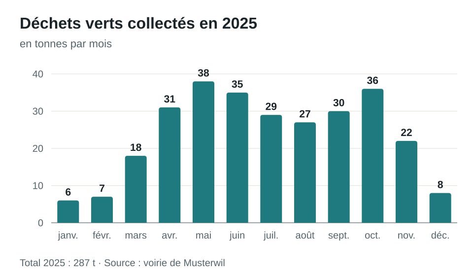

Calendrier des déchets 2026
Dates de ramassage, points de collecte et taxes de la commune de Musterwil.
Veuillez déposer les sacs à ordures et les conteneurs à déchets verts au bord de la route le jour du ramassage, avant 7 h. Les sacs taxés sont en vente au magasin du village, à la boulangerie de la place du village et à l’administration communale.
Dates de ramassage 2026
Les dates de novembre en un coup d’œil :
| lu | ma | me | je | ve | sa | di |
|---|---|---|---|---|---|---|
| 1 | ||||||
| 2 | 3Ordures ménagères | 4 | 5Déchets verts | 6 | 7 | 8 |
| 9 | 10Ordures ménagères | 11Papier | 12 | 13 | 14 | 15 |
| 16 | 17Ordures ménagères | 18 | 19Déchets verts | 20 | 21 | 22 |
| 23 | 24Ordures ménagères | 25Carton | 26 | 27 | 28 | 29 |
| 30 |
- Ordures ménagères
- Déchets verts
- Papier
- Carton
Déchets verts : quantités collectées en 2025
La quantité de déchets verts varie fortement selon les saisons. En hiver, le ramassage n’a donc lieu que toutes les deux semaines.

Points de collecte
| Point de collecte | Déchets acceptés | Heures d’ouverture |
|---|---|---|
| Voirie de Moosmatt | Déchets verts, encombrants, ferraille, appareils électriques | Me 13 h 30–17 h, sa 9 h–12 h |
| Point de collecte de la gare | Verre, aluminium, fer-blanc | Lu–sa 7 h–20 h |
| École de Moosmatt | Vêtements et chaussures | En tout temps (conteneur) |
Taxes et règlement
La taxe de base s’élève à CHF 95.– par ménage et par an. Un sac de 35 litres coûte CHF 2.20.
Prochains ramassages
- Mardi 20 octobre : ordures ménagères
- Jeudi 22 octobre : déchets verts
- Mercredi 28 octobre : papier